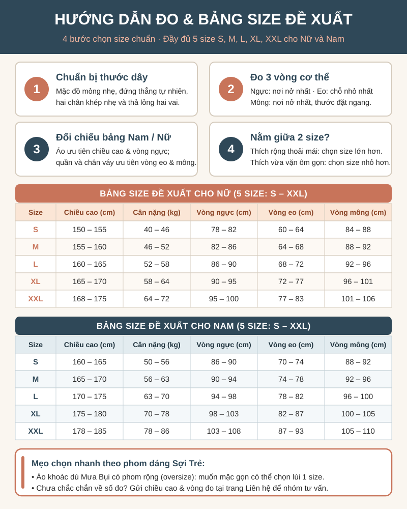

Vải dù
- Giặt máy chế độ nhẹ, nước lạnh.
- Không dùng nước xả vải vì làm giảm khả năng chống nước.
- Phơi nơi thoáng, không cần là (ủi).
Trang chủ / Kích thước
Mua online mà sai size là chuyện rất hay gặp. Trang này giúp bạn tự đo tại nhà, so với bảng size và biết cách giặt để quần áo bền lâu.
| Size | Chiều cao | Cân nặng | Vòng ngực | Vòng eo | Vòng mông |
|---|---|---|---|---|---|
| S | 150 – 155 | 40 – 46 | 78 – 82 | 60 – 64 | 84 – 88 |
| M | 155 – 160 | 46 – 52 | 82 – 86 | 64 – 68 | 88 – 92 |
| L | 160 – 165 | 52 – 58 | 86 – 90 | 68 – 72 | 92 – 96 |
| XL | 165 – 170 | 58 – 64 | 90 – 95 | 72 – 77 | 96 – 101 |
| XXL | 168 – 175 | 64 – 72 | 95 – 100 | 77 – 83 | 101 – 106 |
| Size | Chiều cao | Cân nặng | Vòng ngực | Vòng eo | Vòng mông |
|---|---|---|---|---|---|
| S | 160 – 165 | 50 – 56 | 86 – 90 | 70 – 74 | 88 – 92 |
| M | 165 – 170 | 56 – 63 | 90 – 94 | 74 – 78 | 92 – 96 |
| L | 170 – 175 | 63 – 70 | 94 – 98 | 78 – 82 | 96 – 100 |
| XL | 175 – 180 | 70 – 78 | 98 – 103 | 82 – 87 | 100 – 105 |
| XXL | 178 – 185 | 78 – 86 | 103 – 108 | 87 – 93 | 105 – 110 |
Bảng size 5 cỡ (S, M, L, XL, XXL) cho cả Nam và Nữ do nhóm tự xây dựng dựa trên số đo thực nghiệm của sinh viên (số liệu giả định). Áo khoác Mưa Bụi có dáng rộng (oversize) nên bạn có thể chọn lùi 1 size nếu thích mặc gọn.

Hãy luôn xem các ký hiệu giặt là trên nhãn áo. Các ký hiệu này được quy định trong tiêu chuẩn quốc tế ISO 3758 (Ký hiệu hướng dẫn bảo quản hàng dệt).
Gửi số đo của bạn cho nhóm, chúng mình sẽ gợi ý size phù hợp cho từng mẫu.
Gửi yêu cầu tư vấn size Xem câu hỏi về đổi size